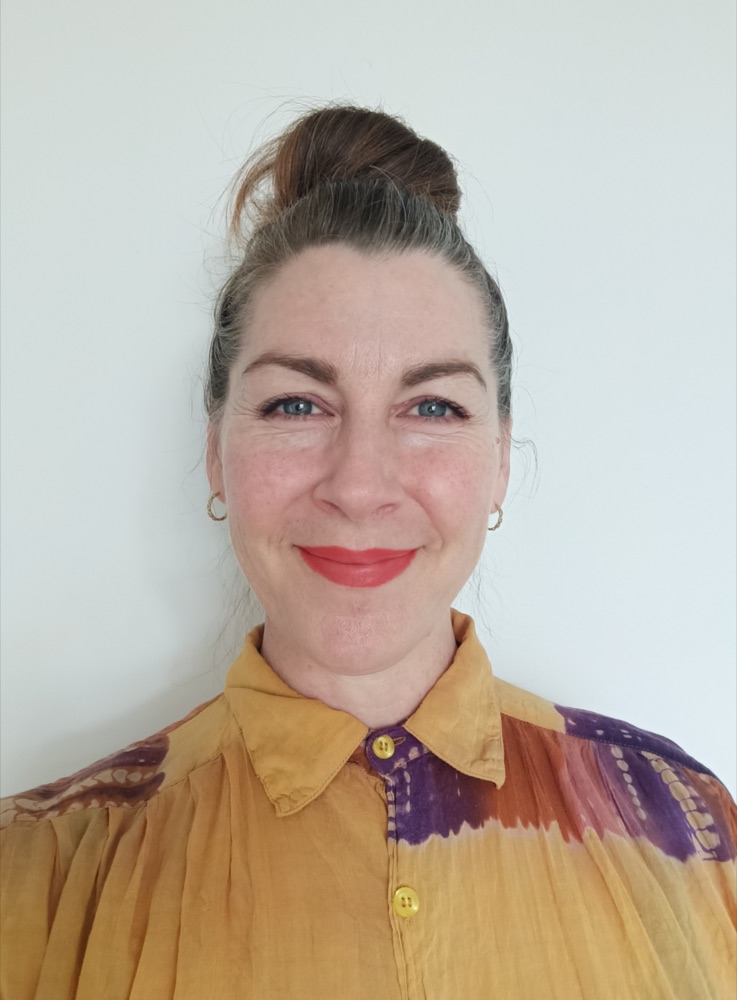

Louise Terry
Counselling & Psychotherapy
Based in Mount Alexander Shire, Victoria.
My full website is on its way. In the meantime, you're welcome to get in touch by email.
hello@louiseterry.com
Counselling & Psychotherapy
Based in Mount Alexander Shire, Victoria.
My full website is on its way. In the meantime, you're welcome to get in touch by email.
hello@louiseterry.com